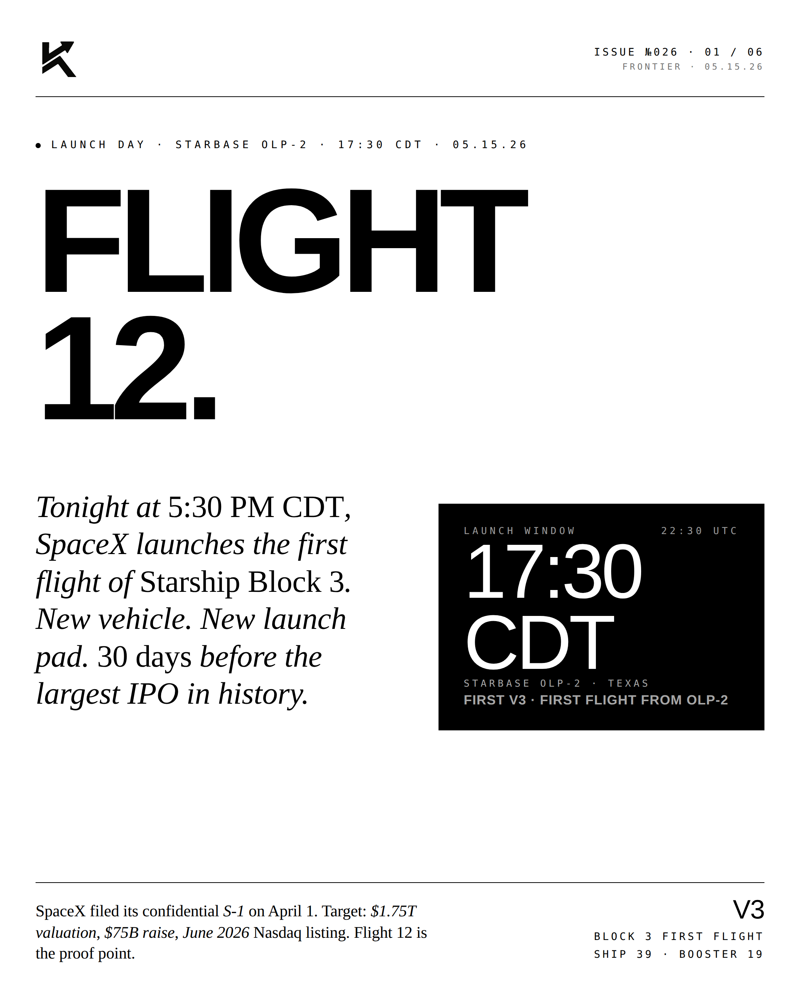
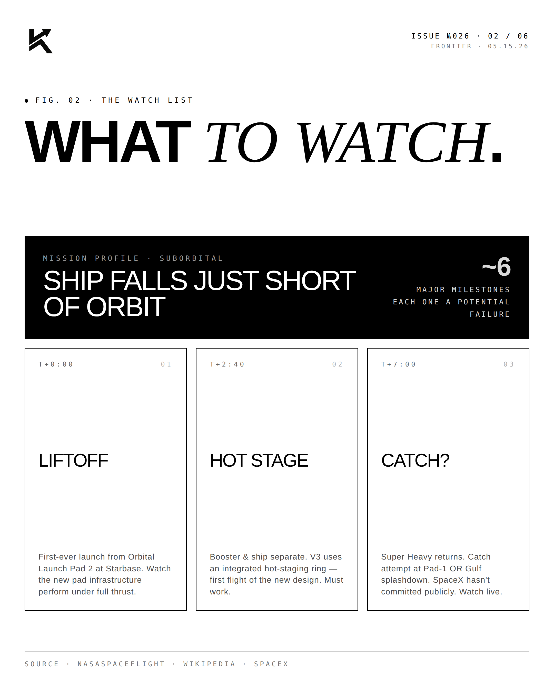
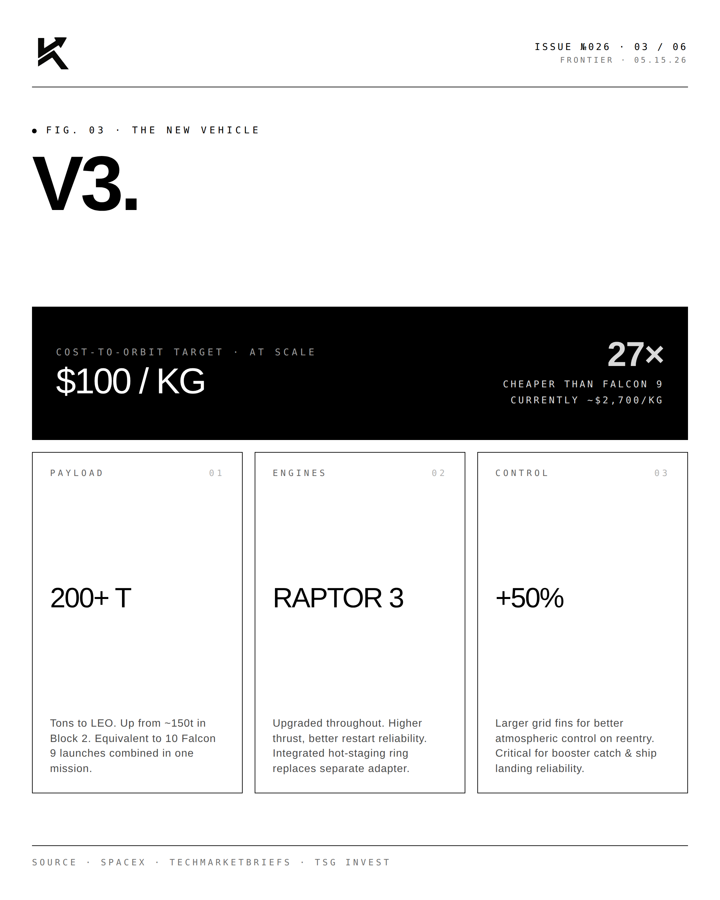
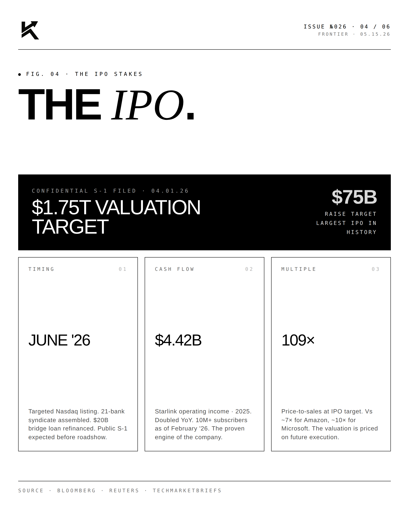
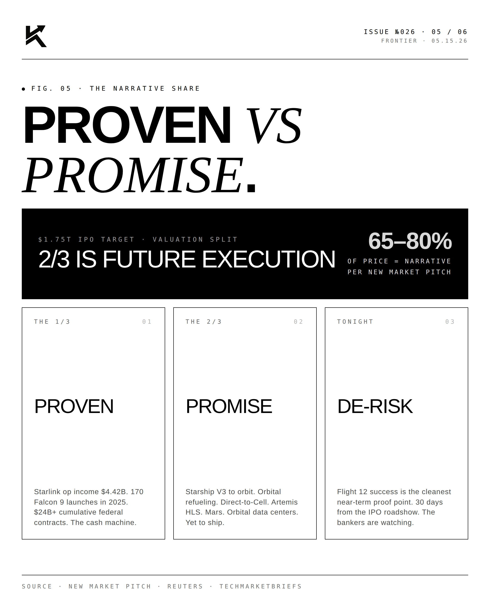
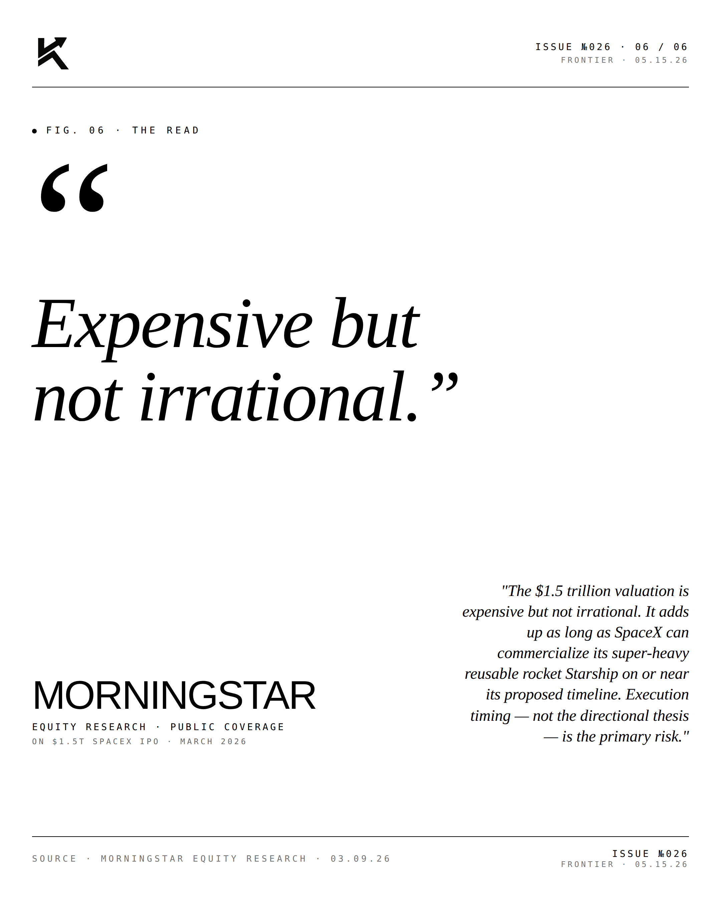

Flight 12.
Tonight at 5:30 PM CDT, SpaceX launches the first flight of Starship Block 3. New vehicle. New launch pad. 30 days before the largest IPO in history.

What to Watch.
Tonight's mission is suborbital — by design. Ship 39 will fall just short of orbital velocity over the Indian Ocean. But the test profile is dense with firsts:

- T+0:00 — Liftoff from Orbital Launch Pad 2. First ever launch from OLP-2.
- T+2:40 — Booster and ship separate via integrated hot-staging ring. First flight of the new design.
- T+7:00 — Super Heavy returns. Catch attempt at Pad-1 or Gulf splashdown. SpaceX hasn't committed publicly.
- ~T+45:00 — Heat shield reentry. Historic pain point — killed Flights 7, 8, 9.
- ~T+65:00 — Indian Ocean ship landing.

V3.
Block 3 (V3) is not a tweak — it's a generational upgrade:

- 200+ tons to LEO (vs ~150t for Block 2)
- Raptor 3 engines, integrated hot-staging ring
- 50% larger grid fins for atmospheric control
- $100/kg target launch cost — 27× cheaper than Falcon 9
- Required for Starlink V3 deployment, Artemis HLS, and Mars architecture

The IPO.
SpaceX filed its confidential S-1 with the SEC on April 1, 2026. The target: a $1.75 trillion valuation and $75 billion raise, with a June 2026 Nasdaq listing. The raise alone would be three times the largest IPO in history (Saudi Aramco at $25.6B). A 21-bank syndicate is assembled. A $20B bridge loan has been refinanced.
Approximately 1/3 of that valuation is defensible on proven Starlink + launch cash flow: $4.42B Starlink operating income in 2025 (doubled YoY), 10M+ subscribers, 170 Falcon 9 launches in 2025. The other 2/3 is priced on future execution — Starship V3, orbital refueling, Direct-to-Cell, Artemis, Mars, orbital data centers.
Tonight is the cleanest near-term proof point. 30 days from the IPO roadshow. The bankers are watching.
"Expensive but
not irrational."MORNINGSTAREquity Research · Public Coverage · On $1.5T SpaceX IPO · March 2026
"The $1.5 trillion valuation is expensive but not irrational. It adds up as long as SpaceX can commercialize its super-heavy reusable rocket Starship on or near its proposed timeline. Execution timing — not the directional thesis — is the primary risk."

From science fiction to medical device. From R&D to scale. Tonight, the proof.
Disclosure
The author is a Limited Partner in 1789 Capital, which holds a position in SpaceX. Personal commentary and editorial analysis. Not investment advice, not an offer or solicitation.